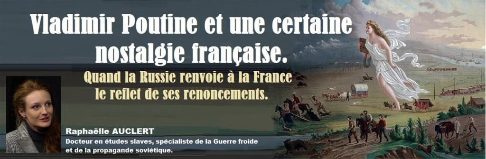
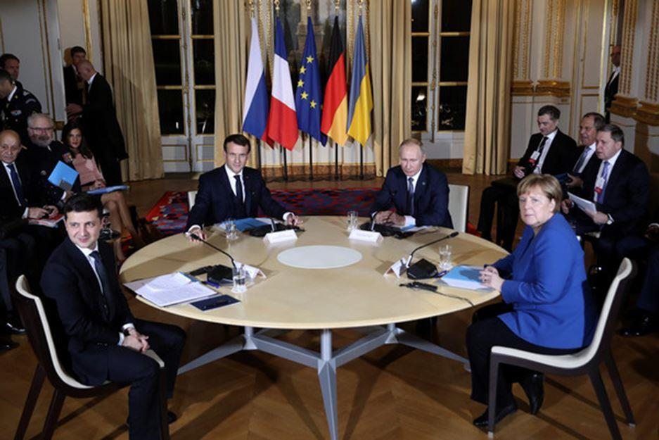
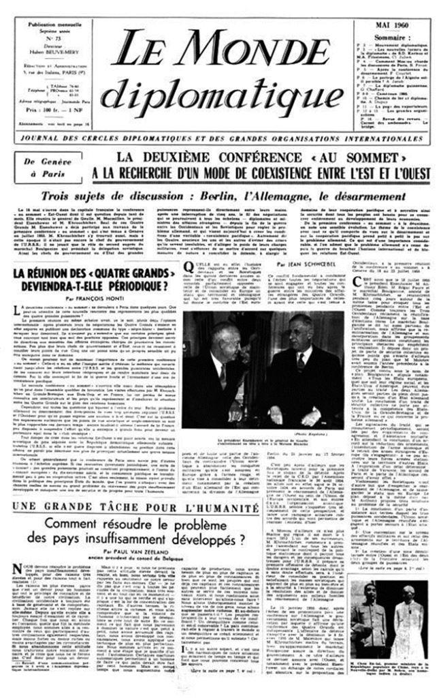
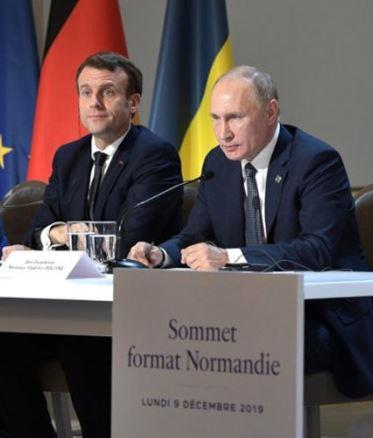
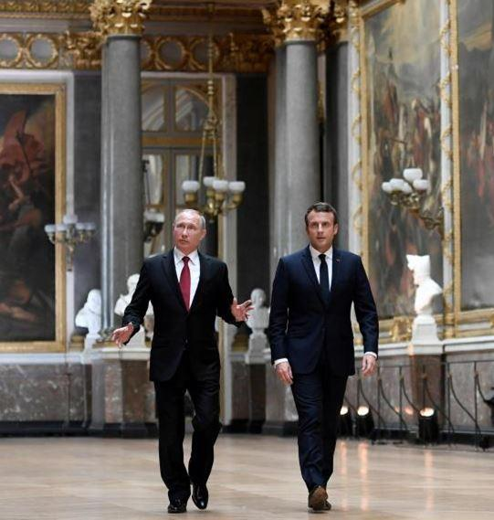
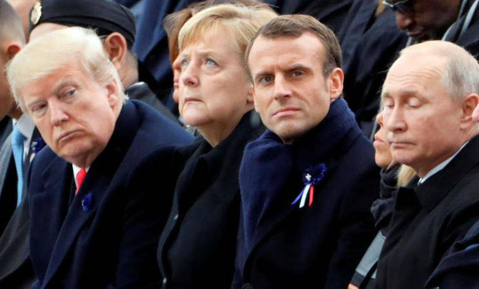
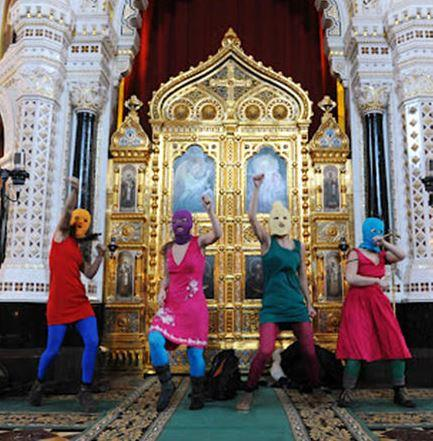
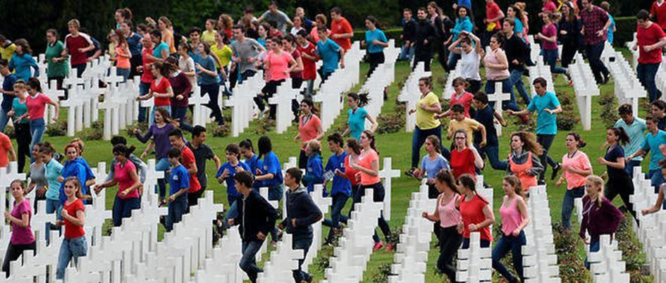

Vladimir Poutine et une certaine nostalgie française. Quand la Russie renvoie à la France le reflet de ses renoncements
par Raphaëlle AUCLERT

« La diplomatie n’est rien si elle n’est pas tout. »
Comte de Saint Aulaire, diplomate.
Le 9 décembre dernier s’est tenu à Paris un sommet en format « Normandie » visant à trouver une issue au conflit qui oppose la Russie et l’Ukraine dans les provinces du Donbass.
Cet événement s’inscrit dans une séquence initiée par la France de rapprochement avec la Russie. Elle avait débuté par la rencontre entre nos deux chefs d’État à Brégançon en août dernier, suivie quelques jours plus tard par une allocution du président Macron aux ambassadeurs, où il jugeait « indispensable » l’établissement d’ « un front commun entre l’Union européenne et la Russie ». Début septembre, pour la première fois depuis la crise de Crimée, les ministres français de la Défense et des Affaires étrangères s’entretenaient avec leurs homologues à Moscou pour « rebâtir une architecture de confiance ». Partant, faut-il se réjouir de ce nouvel élan donné aux relations franco-russes ? Hélas, la réponse est non. En effet, malgré l’optimisme béat s’exhalant des éditoriaux comme des communiqués officiels, il est à craindre que les discours volontaristes du président Macron ne restent lettre morte, tant ils semblent inopérants dans un contexte stratégique français moins amical envers Moscou que teinté de frilosité et de défiance. Cette posture, du reste, ne date pas d’hier. Elle est celle d’une France tenue par son allégeance atlantiste, qui renie avec le même zèle ses intérêts autant que ses valeurs.
La conquête de l’Est
Depuis la Guerre froide et la bien nommée opération Overlord (chef suprême), les Etats-Unis, à travers l’OTAN, n’ont eu de cesse d’étendre leur hégémonie de plus en plus à l’est. À cet égard, la configuration du sommet du 9 décembre n’est pas sans rappeler un autre sommet de Paris qui s’est tenu le 14 mai 1960 ; seulement, entre temps, la ligne de front s’est déplacée du rideau de fer au rideau de feu du Donbass. Une autre différence, purement formelle celle-ci, est que la Russie ne négocie plus avec les Etats-Unis mais avec ses gouverneurs, en les personnes de Madame Merkel et Monsieur Macron.
On note cependant une constante : comme en 1960, la France s’accommode encore du triste rôle de maître d’hôtel. Dérouleuse de tapis rouge et marmiton flattant de ses mets fins les papilles des puissants, elle se contente d’assister en spectatrice à une joute qui la dépasse. Pour preuve, rappelons-nous simplement les propos du général De Gaulle, qui jouait en son temps les petits télégraphistes entre Dwight Eisenhower et Nikita Khrouchtchev.1 Soixante ans plus tard, le locataire de l’Élysée tient à son tour la chandelle pour la première tête à tête des présidents russe et ukrainien.
L’issue de la rencontre n’est guère plus fructueuse. En 1960 la partie soviétique quittait avec fracas la conférence suite au refus des Etats-Unis de s’excuser sur l’affaire de l’avion U2, laissant un général De Gaulle embarrassé et les bras ballants ; aujourd’hui, le sommet s’achève sur une déclaration-confetti ne contenant que de vagues intentions2 et des mesures accessoires sur des échanges de prisonniers, le cessez-le-feu qu’il faudrait quand même finir par observer – il a été violé vingt fois déjà - ou certaines zones à déminer. Ce ne sont là que des aménagements pratiques en situation de conflit.
Or, l’enjeu essentiel était ailleurs : il s’agissait, en application des accords de Minsk, de concéder un statut spécial aux provinces de l’est qui permette de prendre en compte les particularités identitaires et culturelles des populations de langue et de tradition russes, sans les faire rentrer au forceps dans le moule européiste et clairement hostile à la Russie du pouvoir central de Kiev.
Pourtant, la déclaration finale du sommet ne saurait mieux concourir au but recherché par Washington et ses alliés dans le dossier ukrainien : gagner du temps, favoriser un pourrissement de la situation sur le terrain, où la guérilla a déjà fait 13000 victimes et deux millions de civils déplacés. Une fois le processus de dépopulation des russophones achevé, la prochaine étape sera immanquablement la colonisation de ces provinces par des citoyens ukrainophones loyaux au gouvernement, qui entamera alors la reprise en main de ces territoires. Et la république française d’accompagner ces funestes desseins en faisant mine d’y présider ; il serait néanmoins malhonnête de ne pas lui reconnaître une séniorité dans ce domaine pour son savoir-faire atavique, puisque jadis elle n’avait pas procédé autrement en Vendée. En face, la partie russe a tenu bon sa ligne de maintien des accords de Minsk ; quant au statut russe de la Crimée, il est désormais considéré comme acquis et n’a pas même été évoqué lors du sommet. Mais au-delà du conflit du Donbass et de ses implications géopolitiques, quelles sont pour la France les raisons de ce nouvel engagement avec la Russie ?
Le « virage russe » de Macron : une nouvelle mesure pour rien ?
Notons tout d’abord que cette main tendue à la Russie pourrait susciter un franc enthousiasme si elle ne rappelait à s’y méprendre le geste du président Macron au lendemain de son élection. En mai 2017, il avait convié Vladimir Poutine à Versailles pour une première rencontre dans la perspective, selon ses propres termes, d’une « action commune ». Dix mois plus tard, il n’en restait rien et Emmanuel Macron se joignait au chœur de récriminations contre la Russie dans l’affaire Skripal, la mettant temporairement au ban des nations sur de simples soupçons et une kabbale médiatique savamment orchestrée.
Le président français a ainsi donné la mesure de sa versatilité et de toute la prudence avec laquelle il convient d’accueillir ses protestations d’amitié. Les Russes, du reste, ne s’y trompent plus et écoutent ses discours dans un silence poli.3 Emmanuel Macron lui-même ne s’en cache pas : interrogé lors de la conférence de presse du sommet du 9 décembre sur sa possible réaction en cas d’un nouvel incident analogue à l’affaire Skripal, il réplique sans une seconde d’hésitation : « Si une solidarité [avec le Royaume-Uni] était appelée, elle sera effective et la France sera au rendez-vous, comme toujours. » L’injonction britannique a donc la primauté sur toute autre alliance, et peu importe si la relation franco-russe doit passer aux pertes et profits.
Ceci posé, que diable le président français va-t-il donc faire avec cette Russie qui est loin d’avoir sa préférence ? Tout naturellement, ce trader de la politique spécialisé sur les actifs à court terme vient y chercher des dividendes symboliques et électoraux. En politique intérieure, il flatte l’électorat de droite qui a de longue date une sensibilité pro-russe, sans heurter néanmoins ses concitoyens de gauche qui depuis longtemps se sont détournés de la diplomatie interétatique, jugée dépassée dans le contexte d’une globalisation qu’ils acclament et de son corollaire, l’abolition des frontières. Tel un Talleyrand au Congrès de Vienne, il se présente devant son peuple comme un souverain décidant du sort de l’Europe. En outre, il peut ainsi se prévaloir à peu de frais d’une politique étrangère d’ouverture, puisque la Russie a pour habitude de répondre favorablement aux amorces de dialogue, en particulier venant de la France et des pays d’Europe de l’ouest. Cette phase de détente affichée donnera d’ailleurs d’autant plus de crédit à un prévisible retournement de veste du président, pour peu que son suzerain américain juge opportun d’exercer des pressions sur Moscou. Considéré avec recul, les épisodes de Versailles et de Brégançon ne sont donc que deux mesures pour rien avant de reprendre la musique atlantiste.
Enfin, pour ceux qui s’obstineraient à voir dans les derniers échanges autre chose qu’une gesticulation de circonstance, il leur suffit pour se raviser de s’en référer non aux discours du président mais à ses actes. Jugeons plutôt : le 12 décembre dernier soit trois jours seulement après le sommet russo-ukrainien, les dirigeants de l’Union européenne ont prolongé à l’unanimité pour six mois les sanctions à l’encontre de la Russie. Quant à la relation bilatérale en elle-même, l’ancien ambassadeur de Russie à Paris Alexandre Orlov regrettait tout récemment son caractère « chaotique et aléatoire, sans vision stratégique ».4 Il suggère aux gouvernants de renforcer les organes de coopération (tels que la Commission gouvernementale ou le Conseil économique et financier), d’étendre l’enseignement du russe et de développer la connaissance de la Russie pour dépasser les préjugés. Il conclut que la France et la Russie auraient tout à gagner d’une plus grande coopération économique, scientifique et technologique, et en particulier la France, qui en retirerait une véritable souveraineté technologique, industrielle et donc politique.
La dernière conférence des ambassadeurs ne fait malheureusement que confirmer le constat du diplomate russe. De surcroît, tout en s’abstenant de définir des axes de coopération entre les deux pays comme il le souhaite, le discours du président mentionne la Russie en termes peu flatteurs, tantôt sournoise et dissimulatrice, tantôt ouvertement menaçante.5 Plus grave, il souligne une profonde incompatibilité de valeurs qui exclut de facto toute confiance possible, condition indispensable à une amitié sincère et durable. Ainsi, lorsqu’il évoque « un projet russe aujourd'hui qui est profondément conservateur et opposé au projet de l'Union européenne, assumé. » En effet, force est de reconnaître le divorce des valeurs promues par les deux chefs d’État. C’est bien ce choc entre des visions opposées de l’Europe et des Européens qui compromet les chances d’une vraie coopération franco-russe.
Deux présidents dans la bataille pour l’Europe : droits de l’homme contre droits des peuples
Au cours de cette même adresse aux ambassadeurs, Emmanuel Macron ne propose rien de moins que de « refonder la civilisation européenne ». Selon lui, « ce projet européen qui est très profondément aussi un projet français, c'est l'esprit de la Renaissance, c'est l'esprit des Lumières. » Il rejette donc les modèles de société traditionnelle et chrétienne prônés par certains pays : « Le projet de civilisation européenne ne peut pas être porté ni pas par la Hongrie catholique, ni par la Russie orthodoxe (…) ce sont des projets qui ont leurs différences mais ils portent une vitalité culturelle et civilisationnelle, pour ma part, que je considère comme erronée mais qui est inspirante. » Nous le savons, par toutes ses prises de position tant sur les minorités (sexuelles, ethniques) que sur les questions migratoires et économiques, le président français prend toujours le parti des idées progressistes et des droits de l’homme. Il rappelle lui-même dans son discours l’importance de « défendre la force et la vitalité des droits de l'homme qui se sont si affaiblis ces dernières années. »
A l’inverse, le président russe a toujours mis en tête de ses priorités la défense des peuples : que ce soit en Syrie, dans le Donbass ou dans sa politique interne avec la défense de la famille.6 De même, lorsque les Pussy Riots avaient fait une « prière punk » dans une église de Moscou, il avait affirmé la primauté de la défense du sentiment religieux des fidèles sur la liberté d’expression des jeunes rockeuses.
La question qui se pose est de savoir si les choix éthiques et anthropologiques d’Emmanuel Macron sont bien ceux de la majorité des Français : autrement dit, le pays légal est-il le miroir du pays réel ? À l’heure d’un mal-être criant au sein de la population française, exprimé en partie dans les émeutes de Gilets jaunes et les prescriptions record d’antidépresseurs, il est légitime de s’interroger. Notre pays n’est-il pas las de cette dissociété si bien décrite par Marcel de Corte, de cet individu-tyran qui fait éclater toutes les structures de la vie collective et, avec elles, tout espoir de contribuer au bien commun et d’y puiser des forces ? À cet égard, la poursuite effrénée des idéaux des Lumières7 par le gouvernement de la France l’a amené à renier des principes et des valeurs structurants pour elle, qui se détachent d’autant plus distinctement par contraste avec la politique du président russe. Quels sont ces renoncements ? Nous en voyons trois.
En premier lieu, la France a renoncé à une existence politique propre ; Emmanuel Macron peut bien aspirer à une « souveraineté européenne », celle-ci n’en demeure pas moins une chimère qui aliène la seule souveraineté qui est la souveraineté nationale. Si un adage dit que la véritable primauté est d’être maître chez soi, alors notre pays en est loin à cause de son harnachement à la technocratie bruxelloise et de ses obligations envers l’OTAN dans le domaine régalien de la diplomatie. Ce n’est pas le cas de la Russie, dont la participation à des organisations internationales lui laisse les mains libres dans la conduite de ses affaires.
Le deuxième renoncement est moral. À la différence de Jacques Chirac qui refusa d’inscrire les racines chrétiennes de l’Europe en préambule de la constitution européenne, Vladimir Poutine promeut lui les valeurs chrétiennes de son pays. Par ailleurs, le chef du Kremlin s’est attaché à défendre les Chrétiens d’Orient et à tenir un discours cordial mais ferme auprès de ses compatriotes musulmans. Au-delà des valeurs chrétiennes, ce sont toutes les valeurs traditionnelles qui sont vouées aux gémonies dans notre pays : la famille, la nation, le patrimoine historique et spirituel… alors qu’elles sont ouvertement célébrées en Russie. C’est ainsi que l’on assiste le 9 mai à Moscou au défilé du « Régiment immortel » en hommage aux combattants de la Grande guerre ; parallèlement, François Hollande marquait le centenaire de Verdun par une surprenante scénographie contemporaine où 3400 jeunes piétinaient en courant les tombes de l’ossuaire de Douaumont. Ces deux mises en scène sont très révélatrices de la place du peuple et de ses sacrifices dans le discours officiel.
Le pouvoir français, dans ses déclarations, a depuis longtemps fait du peuple la variable d’ajustement aux dogmes mondialistes. Du reste, il y a comme un paradoxe à observer une Union européenne fossilisée dans une idéologie droit-de-l’hommiste en pleine déliquescence, comme l’Union soviétique d’autrefois, tandis que la Russie actuelle privilégie une approche plus souple et pragmatique ; on l’a vu dans le cas des sanctions ou de la Syrie. En outre, le président russe se revendique d’être un homme du peuple, il évoque volontiers ses origines modestes et son enfance dans un appartement communautaire. Son langage est celui de l’homme de la rue ; quand l’occasion se présente, il n’hésite pas à employer des dictons populaires ou à raconter des histoires drôles. Il apparaît volontiers dans un cadre bucolique en train de pratiquer des loisirs de moujik russe, comme la pêche ou la cueillette des champignons. On est à mille lieues du discours de robot auquel nous ont habitué les politiques français depuis les dernières décennies, pleins de mépris pour les « Gaulois réfractaires » et les « sans dents ».
***
Dans une France qui a renoncé à sa souveraineté, à ses valeurs et à son peuple, bref à elle-même, le spectacle d’un dirigeant qui prend le contre-pied de la modernité et ne craint pas de dénoncer les valeurs libérales comme « obsolètes »8 en fait rêver beaucoup. Il explique la popularité de Vladimir Poutine en France malgré le traitement défavorable que lui réservent les médias. On en viendrait presque à se demander si les Russes, foncièrement francophiles, n’aiment pas davantage la France que ses propres dirigeants, voire que les Français eux-mêmes. En regardant vers Moscou, nos concitoyens entrevoient le lointain souvenir d’une France libre d’être elle-même et aimée pour ce qu’elle était. Cette pensée les laisse un instant songeurs, frappés comme par la foudre d’une certaine nostalgie de la France.
R.A.
NOTES
1. Voir le sténogramme de l’entretien du 15 mai 1960 entre Nikita Khrouchtchev et le général De Gaulle, au cours duquel les Soviétiques conditionnent leur participation à des excuses publiques de la partie américaine à propos de l’avion espion U2 intercepté peu de temps auparavant. Voici les paroles du général : « Je prends bonne note de vos déclarations. Cet après-midi je dois rencontrer le président des Etats-Unis et je lui transmettrai vos propos (… ) je transmettrai le contenu de votre déclaration au président Eisenhower et j’attendrai de savoir ce qu’il en dit (…) comme je vous l’ai déjà dit, je transmettrai votre position au président Eisenhower (…) je transmettrai aujourd’hui même à Eisenhower le contenu de votre déclaration (…) vous m’avez indiqué votre position, j’en ferai part à Eisenhower. C’est à Eisenhower de formuler une réponse, je ne peux quant à moi donner aucune réponse à votre déclaration. » Cité dans La valse de Vienne de la Guerre froide, compilation de documents d’archives ayant trait à la rencontre entre N. Khrouchtchev et J.F. Kennedy en 1961 à Vienne, Moscou : Rosspen, 2011, pp. 41-43.
2. « Les parties expriment leur intérêt pour un accord à trouver au sein du format Normandie (N4) et du Groupe de contact trilatéral sur tous les aspects juridiques des dispositions particulières d’auto-administration locale », Extrait de la déclaration émise le 9 novembre 2019 à l’issue du sommet de Paris en format « Normandie », disponible sur le site de l’Élysée.
3. Une fois encore, le recours aux archives nous montre que si l’histoire ne se répète pas, il lui arrive parfois de rimer. À cet égard, citons des extraits du compte-rendu de la conversation du 8 août 1961 entre le député A. Kaïrov et le président du groupe parlementaire d’amitié France-URSS (probablement René Schmit) : « Schmitt est convaincu qu’il n’existe aucune question insoluble entre la France et l’Union soviétique (…) il donne l’impression d’être un politicien rusé. Il parle constamment de sa proximité avec De Gaulle (…) il souligne qu’il est un ami de l’Union soviétique, qu’il préside le groupe parlementaire d’amitié franco-soviétique qui compte cent personnes (…) Il faut considérer ses paroles avec la plus grande méfiance. » in La valse de Vienne de la Guerre froide, op. cit., p. 449.
4. Voir son interview dans le Spectacle du Monde du 7 novembre 2019, pp. xiv-xvii.
5. Extraits du discours d’Emmanuel Macron à la conférence des ambassadeurs 2019, disponible sur le site de l’Élysée : « Beaucoup d'entre vous ont parfois fait leur carrière à conduire des dossiers où tout les a conduit à avoir de la défiance à l'égard de la Russie, parfois à juste titre (…) il faut bien le dire nos relations [avec la Russie] se sont structurées et ont documenté la défiance. Les attaques sur le plan cyber, déstabilisation démocratique (...) Et tout ça au fond s'est noué dans les années 90 et 2000 lorsqu'une série de malentendus se sont joués et lorsque sans doute l'Europe n'a pas joué une stratégie propre et a donné le sentiment d'être le cheval de Troie d'un Occident dont le but final était de détruire la Russie et où la Russie a construit son imaginaire dans la destruction de l'Occident et donc l'affaiblissement de l'Union européenne (…) Je crois qu'il nous faut construire une nouvelle architecture de confiance et de sécurité en Europe, parce que le continent européen ne sera jamais stable, ne sera jamais en sécurité, si nous ne pacifions pas et ne clarifions pas nos relations avec la Russie (…) Regardez ce grand pays, il a retrouvé des marges de manœuvre par nos faiblesses. Depuis cinq ans la Russie a pris une place inédite dans tous les grands conflits, elle a pris une place inédite parce que les Etats-Unis d'Amérique, la Grande-Bretagne et la France ont été faibles. On avait mis des lignes rouges, elles ont été franchies, nous n'avons pas agi. Ils ont très bien compris, ils ont avancé et donc on ne peut pas ostraciser en étant faible (…) cette grande puissance qui investit beaucoup sur son armement, qui nous fait si peur. »
6. « La Russie préfère « maman » : Poutine rejette l’emploi des termes « parent 1 » et « parent 2 » », RT du 30/11/2019, https://francais.rt.com/international/68441-remplacer-pere-mere-par-parent-1-parent-2-poutine-espere-arrivera-jamais-russie consulté le 5 décembre 2019.
7. Il parle lui-même d’une « diplomatie de mouvement » et enjoint son auditoire à « courir plus vite face à ce monde qui bouge », conférence des ambassadeurs du 27 août 2019.
8. Interview de Vladimir Poutine au Financial Times, 27 juin 2019.
Partager cette page